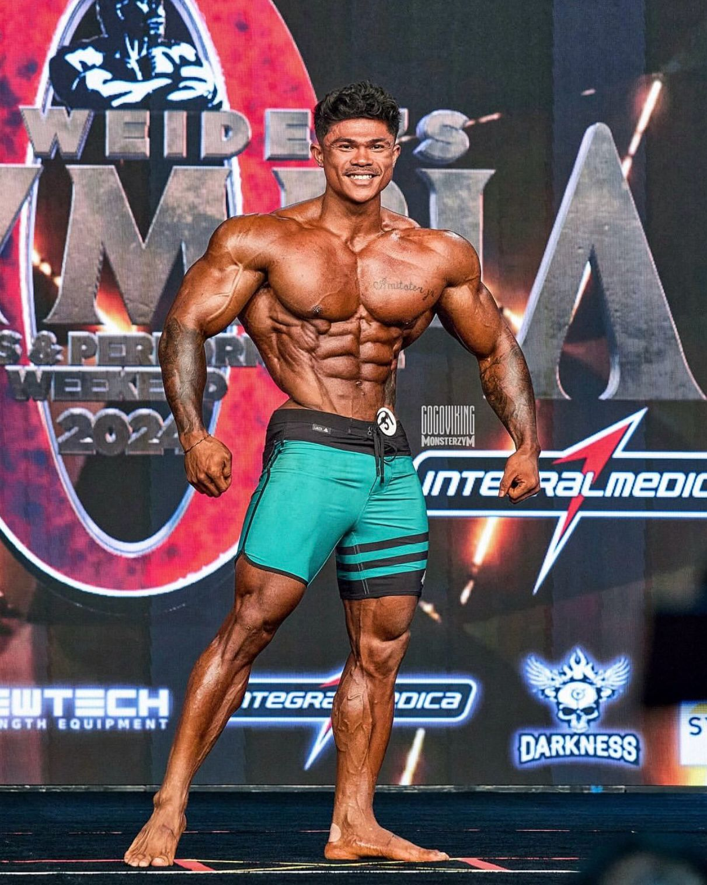

Fakta dan Risiko Penggunaan Steroid dalam Bodybuilding
Peringatan: Artikel ini hanya untuk tujuan informasi. Penggunaan steroid tanpa pengawasan medis dapat berbahaya bagi kesehatan
Berdasarkan artikel dari Kompasiana dan berbagai sumber medis, berikut analisis tentang penggunaan steroid dalam dunia fitness:

Fisik Natural

Fisik dengan Steroid
Efek Visual yang Terlihat:
- Peningkatan massa otot yang signifikan
- Definisi otot yang lebih jelas
- Vaskularitas yang meningkat
- Perubahan komposisi tubuh secara drastis
"Banyak yang tergoda hasil instan steroid, tapi kesehatan jangka panjang adalah harga yang harus dibayar." - Dr. John Doe, Ahli Endokrinologi
Referensi: Artikel Kompasiana tentang Steroid